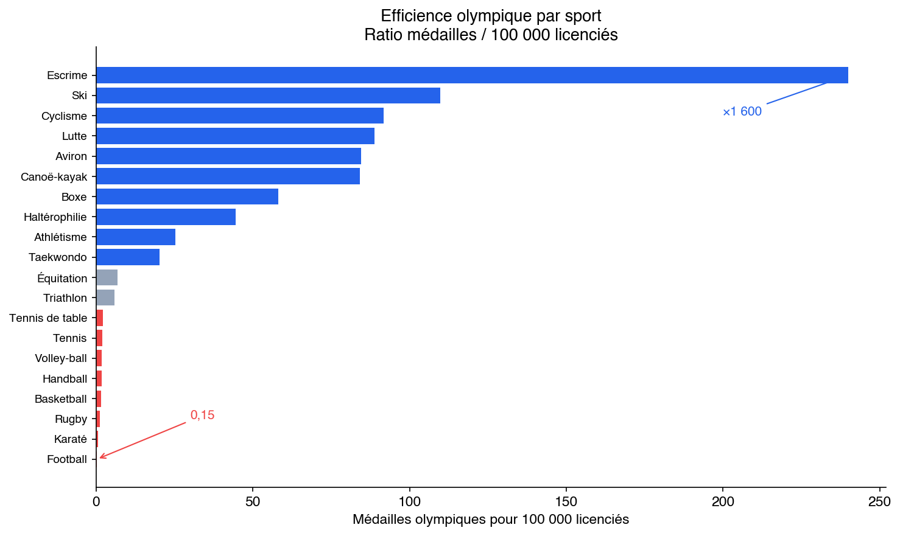

La France est-elle un pays de sport ?
Formation, densité, et l'incapacité à élever
La France dépense plus d'argent public pour le sport que n'importe quel pays d'Europe (15,8 milliards d'euros par an, 0,6 % du PIB). Elle forme 17,2 millions de licenciés dans 360 000 associations. Elle a remporté 64 médailles à Paris 2024. Et pourtant, un quart de ses médailles d'or dépendaient d'un seul homme formé en Arizona. 43 ans sans Grand Chelem masculin en tennis, 41 ans sans Tour de France en cyclisme, une seule médaille en athlétisme pour 90 sélectionnés. Le système forme partout et n'élève nulle part.
Trois constats. Le sport français est un calque du système éducatif : même densité, même formatage, même rejet des profils atypiques, même confort domestique. Les fédérations exercent un monopole total sur l'accès aux compétitions internationales (inscription obligatoire via la fédération nationale en judo, escrime, athlétisme, natation), ce qui rend invisible le coût des talents perdus. Et quand l'exception émerge – le MMA sans aucun soutien fédéral, le badminton après le recrutement d'un coach étranger, les championnes de tennis formées hors FFT – elle se construit systématiquement en dehors du système.
Trois propositions. (1) France Performance : une agence de haute performance indépendante, sur le modèle UK Sport, qui concentre 50-75 M€/an sur les disciplines à potentiel et conditionne le financement aux résultats. (2) Détection 6e-3e : tester les capacités physiques réelles de 800 000 élèves par an et informer les familles des sports adaptés au profil de leur enfant, via une plateforme RGPD-compatible. (3) SOFISA : créer des Sociétés pour le Financement de l'Innovation Sportive et Athlétique, sur le modèle des SOFICA du cinéma (48 % de réduction d'impôt, 1,8 milliard d'euros investis en 40 ans). L'athlète porte son projet, choisit son encadrement, lève des fonds auprès d'investisseurs privés défiscalisés. Les fédérations recommandent mais n'ont pas de veto. Des anciens champions évaluent les projets de la génération suivante. Enveloppe : 30-50 M€/an de collecte privée, 14-24 M€ de dépense fiscale. Budget total des trois propositions : 88-132 M€/an. C'est le prix de deux transferts de footballeurs. L'horizon est 2032-2036.
Trois chiffres. L'escrime produit 240 médailles pour 100 000 licenciés. Le football en produit 0,15. L'écart n'est pas un accident : c'est le produit d'un système qui excelle à transmettre le geste codifié et qui échoue là où il faut inventer.

Table des matières
La France dépense plus d'argent public pour le sport que n'importe quel pays d'Europe (15,8 milliards d'euros par an, 0,6 % du PIB). Elle forme 17,2 millions de licenciés dans 360 000 associations. Elle a remporté 64 médailles à Paris 2024. Et pourtant, un quart de ses médailles d'or dépendaient d'un seul homme formé en Arizona. 43 ans sans Grand Chelem masculin en tennis, 41 ans sans Tour de France en cyclisme, une seule médaille en athlétisme pour 90 sélectionnés. Le système forme partout et n'élève nulle part.
Trois constats. Le sport français est un calque du système éducatif : même densité, même formatage, même rejet des profils atypiques, même confort domestique. Les fédérations exercent un monopole total sur l'accès aux compétitions internationales (inscription obligatoire via la fédération nationale en judo, escrime, athlétisme, natation), ce qui rend invisible le coût des talents perdus. Et quand l'exception émerge – le MMA sans aucun soutien fédéral, le badminton après le recrutement d'un coach étranger, les championnes de tennis formées hors FFT – elle se construit systématiquement en dehors du système.
Trois propositions. (1) France Performance : une agence de haute performance indépendante, sur le modèle UK Sport, qui concentre 50-75 M€/an sur les disciplines à potentiel et conditionne le financement aux résultats. (2) Détection 6e-3e : tester les capacités physiques réelles de 800 000 élèves par an et informer les familles des sports adaptés au profil de leur enfant, via une plateforme RGPD-compatible. (3) SOFISA : créer des Sociétés pour le Financement de l'Innovation Sportive et Athlétique, sur le modèle des SOFICA du cinéma (48 % de réduction d'impôt, 1,8 milliard d'euros investis en 40 ans). L'athlète porte son projet, choisit son encadrement, lève des fonds auprès d'investisseurs privés défiscalisés. Les fédérations recommandent mais n'ont pas de veto. Des anciens champions évaluent les projets de la génération suivante. Enveloppe : 30-50 M€/an de collecte privée, 14-24 M€ de dépense fiscale. Budget total des trois propositions : 88-132 M€/an. C'est le prix de deux transferts de footballeurs. L'horizon est 2032-2036.
Trois chiffres. L'escrime produit 240 médailles pour 100 000 licenciés. Le football en produit 0,15. L'écart n'est pas un accident : c'est le produit d'un système qui excelle à transmettre le geste codifié et qui échoue là où il faut inventer.
Introduction
Le 11 août 2024, au soir de la cérémonie de clôture des Jeux olympiques de Paris, la France affichait un bilan historique : 64 médailles, dont 16 en or, 26 en argent et 22 en bronze. Cinquième nation au tableau des médailles, le pays hôte avait offert à ses 67 millions d'habitants un été de ferveur collective. Les images étaient puissantes. Le Stade de France debout pour le relais 4x400 mètres. La Concorde vibrante sous les figures du breakdance et du skateboard. Le Grand Palais transfiguré par les assauts de l'escrime. Pendant seize jours, la France s'est vue en grande nation sportive, et le monde a semblé lui donner raison.
Pourtant, un chiffre suffisait à fissurer le récit. Sur les 16 médailles d'or françaises, quatre avaient été remportées par un seul homme : Léon Marchand. Quatre titres olympiques individuels en natation, un exploit que seul Michael Phelps avait réalisé lors d'une même édition. Or Marchand ne s'est pas construit dans le système sportif français. Formé à ses débuts au Cercle des Nageurs de Toulouse, il a quitté la France à vingt ans pour rejoindre l'université d'Arizona State, où il a été entraîné par Bob Bowman, le coach le plus titré de l'histoire de la natation. Ses quatre médailles d'or – un quart du total français – sont le produit d'un écosystème américain : le programme sportif universitaire NCAA, ses moyens illimités, sa culture de la performance individuelle, son obsession de l'optimisation marginale. Si l'on retirait Marchand du décompte, la France passait de 16 à 12 médailles d'or, et de la cinquième à la septième place mondiale.
Le cas Marchand n'est pas une anomalie. Il est un symptôme.
La France occupe une position singulière dans le paysage sportif mondial. En valeur absolue, elle se classe deuxième nation sportive, derrière les États-Unis, selon les critères de l'Aspen Institute qui agrègent résultats olympiques, nombre de pratiquants, infrastructures et investissement public. Mais ramenée à sa population, elle chute au vingt-sixième rang. Cet écart entre puissance brute et efficience est le point de départ de cet essai.
Les chiffres sont là. 17,2 millions de licenciés. 360 000 associations. 332 754 équipements. 15,8 milliards d'euros de dépense publique annuelle – la plus élevée d'Europe. De la salle omnisports du collège rural aux pôles France de l'INSEP, la chaîne existe. Elle fonctionne. Elle produit des sportifs compétents par dizaines de milliers. Des médaillés par dizaines.
Mais pas des champions.
Le constat se répète, sport après sport, avec une régularité qui interdit de l'attribuer au hasard. En cyclisme, la France forme des coureurs solides, mais c'est dans les équipes étrangères du WorldTour qu'ils atteignent leur plein potentiel : 24 coureurs français évoluaient dans des formations non françaises en 2024. En basketball, 19 joueurs français évoluaient en NBA en 2025-2026, faisant de la France le deuxième vivier mondial après le Canada – mais c'est le système américain, de la NCAA aux franchises professionnelles, qui transforme ces talents en joueurs d'élite. En athlétisme, plus de 300 athlètes français sont passés par le circuit universitaire NCAA au cours de la dernière décennie, y trouvant des conditions d'entraînement, un encadrement et une compétition que le système français ne leur offrait pas. Et même dans un sport aussi confidentiel que le football américain, des joueurs issus de minuscules clubs français – la Fédération française ne compte que 33 500 licenciés – parviennent à intégrer des programmes NCAA et à atteindre les ligues professionnelles nord-américaines.
Le schéma est toujours le même : la France forme, l'étranger élève.
Cette mécanique a un analogue précis, et c'est la thèse centrale de cet essai. Le système sportif français est un calque du système éducatif français. Les mêmes forces y sont à l'oeuvre. Les mêmes réussites. Les mêmes échecs.
La densité, d'abord. La France a construit, dans l'éducation comme dans le sport, un réseau d'une capillarité sans équivalent. Chaque commune a son école, chaque canton son collège, chaque département ses lycées, chaque région ses universités. De la même manière, chaque commune a son gymnase, chaque ville son club omnisports, chaque département ses comités fédéraux, chaque région ses pôles espoirs. La formation de masse, ensuite. Le système français excelle à produire un niveau moyen élevé. Le bachelier français, comme le licencié sportif français, possède un socle de compétences solide, une polyvalence honorable, une culture générale de sa discipline. La France ne produit pas d'illettrés sportifs. Elle ne produit pas non plus, ou si rarement, de génies.
Car les failles sont symétriques. L'éducation française sélectionne, sous couvert d'égalité républicaine, par les codes familiaux : maîtrise implicite des attendus, capital culturel hérité, connaissance des filières d'excellence par les parents. Le sport français fait exactement la même chose. L'accès aux filières de haut niveau – sections sport-études, pôles France, INSEP – suppose une famille qui connaît le système, qui peut financer les déplacements en compétition, qui accepte l'éloignement géographique de l'enfant, qui sait négocier avec les fédérations. Le talent brut, sans le capital familial adéquat, est invisible.
L'éducation française formate. Elle valorise la conformité au programme, la reproduction des méthodes canoniques, le respect du cadre. Le sport français fait de même. Les filières de détection privilégient les profils qui correspondent au moule fédéral. Les progressions tardives sont suspectes. Les parcours atypiques sont découragés. Un athlète qui ne rentre pas dans les clous du plan de carrière prévu par sa fédération à seize ans n'existe plus à vingt ans. Il doit alors, s'il en a les moyens, partir – vers la NCAA, vers un club étranger, vers un entraîneur privé.
L'éducation française, enfin, souffre d'un confort domestique qui annihile l'ambition. Le système est suffisamment bon pour que personne ne remette en cause ses fondements. Les résultats sont suffisamment honorables pour que l'urgence de la réforme ne soit jamais ressentie. Le sport français présente la même pathologie. Avec 64 médailles à Paris, pourquoi changer quoi que ce soit ? Le fait que quatre d'entre elles dépendent d'un homme formé en Arizona ne déclenche aucune interrogation structurelle. Le confort du résultat agrégé masque la fragilité des trajectoires individuelles.
Cet essai suit ce fil. Il définit ce qu'est une nation sportive. Il pose un diagnostic sport par sport, en croisant licenciés, médailles, flux d'athlètes vers l'étranger et modèles économiques. Il explique pourquoi le système produit ces résultats – et c'est là que le miroir éducatif devient éclairant. Il esquisse enfin des ajustements qui ne détruisent pas les forces mais comblent les failles.
La France est au sport ce qu'elle est à l'éducation : une machine de formation de masse qui peine à produire l'exception. Comprendre pourquoi, c'est comprendre la France.
Limites et angles morts. Cet essai ne traite pas de tout. Il ne traite pas de la santé par le sport – le sport de haut niveau est un projet de performance, pas un projet de santé publique, et les deux sont souvent antagonistes. Il ne traite pas de l'égalité hommes-femmes comme objectif en soi – l'analyse genrée qu'il propose porte sur les pertes d'opportunité créées par le formatage, pas sur l'équité de traitement. Il ne traite pas du sport paralympique, dont les biais structurels (conflits armés, politiques de handicap radicalement différentes selon les pays) en font un sujet à part entière. Il ne développe pas la comparaison avec l'Allemagne au-delà d'un encadré – l'Allemagne (83 millions d'habitants, PIB comparable, système fédéral, densité de clubs similaire) mériterait un traitement de la même profondeur que le Royaume-Uni. Il ne traite pas de l'histoire du sport français entre 1936 et 1990, période de transformations majeures (loi Mazeaud 1975, loi Avice 1984) qui mériterait un chapitre entier. Il ne dispose pas de données longitudinales propres : toutes les séries sont reconstituées à partir de sources publiques. Ces lacunes sont assumées. Un essai n'est pas une encyclopédie. Il choisit un angle – ici, le parallèle éducatif – et le pousse jusqu'au bout.
Note méthodologique. Cet essai est un travail d'interprétation et de mise en perspective, pas un travail de recherche primaire. Les données mobilisées proviennent de sources publiques : les recensements de licences sportives de l'INJEP (2011-2024), les résultats olympiques compilés depuis 1896 via Olympics.com et Wikipedia, les rapports de la Cour des comptes (2022, 2025), le rapport Onesta sur la haute performance sportive (2018) et sa critique par Seibert (2023), le modèle SPLISS de De Bosscher et al. (2006, 2024), les données UK Sport, les classements Aspen Institute (2022-2023), et les rapports sectoriels des fédérations internationales (IJF, FIE, UCI, BWF, ITTF). Les données de transferts proviennent du CIES Football Observatory. Les chiffres économiques sont issus de la Cour des comptes, de l'INSEE et des fédérations concernées. Aucune donnée n'a été inventée. Les lacunes – notamment l'absence de séries longues de licenciés avant 2011, l'absence de ventilation budgétaire hommes-femmes dans les conventions fédérales, et l'impossibilité de quantifier certains phénomènes (captation du football, coût d'opportunité du monopole fédéral) – sont signalées dans le texte. Les ratios médailles-licenciés, utilisés comme indicateurs d'efficience, font l'objet d'une note méthodologique spécifique dans l'article 4, qui en expose les trois biais principaux.